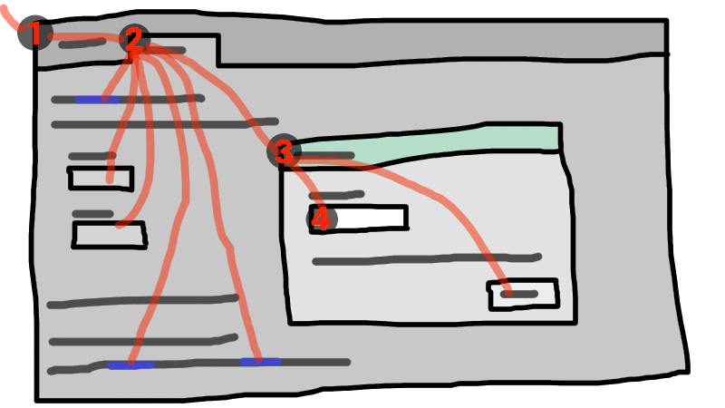

5. User interaction
5.1. The hidden attribute
All html elements may have the hidden content attribute set. The hidden attribute is a boolean attribute. When specified on an element, it
indicates that the element is not yet, or is no longer, directly relevant to the page’s current
state, or that it is being used to declare content to be reused by other parts of the page as
opposed to being directly accessed by the user. User agents should not render
elements that have the hidden attribute specified. This requirement may be
implemented indirectly through the style layer. For example, an HTML+CSS user agent could
implement these requirements using the rules suggested in §10 Rendering.
Because this attribute is typically implemented using CSS, it’s also possible to override it
using CSS. For instance, a rule that applies 'display: block' to all elements will cancel the
effects of the hidden attribute. Authors therefore have to take care when writing
their style sheets to make sure that the attribute is still styled as expected.
<h1>The Example Game</h1> <section> <h2>Login</h2> <form> ... <!-- calls login() once the user’s credentials have been checked --> </form> <script> function login() { // switch screens document.getElementById('login').hidden = true; document.getElementById('game').hidden = false; } </script> </section> <section hidden> ... </section>
The hidden attribute must not be used to hide content that
could legitimately be shown in another presentation. For example, it is incorrect to use hidden to hide panels in a tabbed dialog, because the tabbed interface
is merely a kind of overflow presentation — one could equally well just show all the form
controls in one big page with a scrollbar. It is similarly incorrect to use this attribute to hide
content just from one presentation — if something is marked hidden, it is hidden from all presentations, including, for instance,
screen readers.
Elements that are not themselves hidden must not hyperlink to elements that are hidden. The for attributes of label and output elements that are not
themselves hidden must similarly not refer to elements that are hidden. In both cases, such references would cause user
confusion.
Elements and scripts may, however, refer to elements that are hidden in other contexts.
href attribute to link to a
section marked with the hidden attribute. If the content is not applicable or relevant, then there
is no reason to link to it.
It would be fine, however, to use the ARIA aria-describedby attribute to
refer to descriptions that are themselves hidden. While hiding the descriptions
implies that they are not useful alone, they could be written in
such a way that they are useful in the specific context of being
referenced from the images that they describe.
Similarly, a canvas element with the hidden attribute could be used by a
scripted graphics engine as an off-screen buffer, and a form
control could refer to a hidden form element using its form attribute.
Accessibility APIs are encouraged to provide a way to expose structured content while marking it as hidden in the default view. Such content should not be perceivable to users in the normal document flow in any modality, whether using Assistive Technology (AT) or mainstream User Agents.
When such features are available, User Agents may use them to
expose the full semantics of hidden elements to AT when appropriate, if such content is referenced
indirectly by an ID reference or valid hash-name reference. This allows ATs to access the
structure of these hidden elements
upon user request, while keeping the content hidden in all
presentations of the normal document flow. Authors who wish to prevent
user-initiated viewing of a hidden element should not reference the element with such a mechanism.
Because some User Agents have flattened hidden content when
exposing such content to AT, authors should not reference hidden content which would lose essential
meaning when flattened.
href attribute to link to a section marked with the hidden attribute.
If the content is not applicable or relevant, then there is no reason to link to it.
It would be fine, however, to use the ARIA aria-describedby attribute to refer to descriptions that are
themselves hidden. While hiding the descriptions implies that
they are not useful alone, they could be written in such a way that they are useful in the
specific context of being referenced from the images that they describe.
Similarly, a canvas element with the hidden attribute could be used by a scripted graphics engine as an off-screen buffer, and a form control
could refer to a hidden form element using its form attribute.
Elements in a section hidden by the hidden attribute are still
active, e.g. scripts and form controls in such sections still execute and submit respectively.
Only their presentation to the user changes.
5.2. Inert subtrees
This section does not define or create any content attribute named "inert". This section merely defines an abstract concept of inertness.
A node (in particular elements and text nodes) can be marked as inert. When a node is inert, then the user agent must act as if the node was absent for the purposes of targeting user interaction events, may ignore the node for the purposes of text search user interfaces (commonly known as "find in page"), and may prevent the user from selecting text in that node. User agents should allow the user to override the restrictions on search and text selection, however.
For example, consider a page that consists of just a single inert paragraph positioned in the middle of a body. If a user moves their pointing device
from the body over to the inert paragraph and clicks on the paragraph,
no mouseover event would be fired, and the mousemove and click events would
be fired on the body element rather than the paragraph.
When a node is inert, it generally cannot be focused. Inert nodes that are commands will also get disabled.
While a browsing context container is marked as inert, its nested browsing context’s active document, and all nodes in that Document, must be marked as inert.
An entire Document can be marked as blocked by a modal dialog subject. While a Document is so marked, every node that is in the Document, with the exception of the subject element and its
descendants, must be marked inert. (The elements excepted by this paragraph can
additionally be marked inert through other means; being part of a modal dialog does not
"protect" a node from being marked inert.)
Only one element at a time can mark a Document as being blocked by a modal
dialog. When a new dialog is made to block a Document, the previous element, if any, stops blocking the Document.
The dialog element’s showModal() method makes use of this mechanism.
5.3. Activation
Certain elements in HTML have an activation behavior, which means that the user
can activate them. This triggers a sequence of events dependent on the activation mechanism, and
normally culminating in a click event, as described below.
The user agent should allow the user to manually trigger elements that have an activation behavior, for instance using keyboard or voice input, or through mouse clicks. When the user triggers an element with a defined activation behavior in a manner other than clicking it, the default action of the interaction event must be to run synthetic click activation steps on the element.
Each element has a click in progress flag, initially set to false.
When a user agent is to run synthetic click activation steps on an element, the user agent must run the following steps:
- If the element’s click in progress flag is set to true, then abort these steps.
- Set the click in progress flag on the element to true.
- Run pre-click activation steps on the element.
- Fire a
clickevent at the element. If the run synthetic click activation steps algorithm was invoked because theclick()method was invoked, then theisTrustedattribute must be initialized to false. -
If this
clickevent is not canceled, run post-click activation steps on the element.If the event is canceled, the user agent must run canceled activation steps on the element instead.
- Set the click in progress flag on the element to false.
When a pointing device is clicked, the user agent must run authentic click activation
steps instead of firing the click event. When a user agent is to run authentic click activation steps for a given event event, it must
follow these steps:
- Let target be the element designated by the user (the target of event).
- If target is a
canvaselement, run the canvasMouseEventrerouting steps. If this changes event’s target, then let target be the new target. - Set the click in progress flag on target to true.
- Let e be the nearest activatable element of target (defined below), if any.
- If there is an element e, run pre-click activation steps on it.
-
Dispatch event (the required
clickevent) at target.If there is an element e and the
clickevent is not canceled, run post-click activation steps on element e.If there is an element e and the event is canceled, run canceled activation steps on element e.
- Set the click in progress flag on target to false.
The algorithms above don’t run for arbitrary synthetic events dispatched by author script. The click() method can be used to make the run synthetic click activation steps algorithm happen programmatically.
Click-focusing behavior (e.g. the focusing of a text field when user clicks in one) typically happens before the click, when the mouse button is first depressed, and is therefore not discussed here.
Given an element target, the nearest activatable element is the element returned by the following algorithm:
- If target has a defined activation behavior, then return target and abort these steps.
- If target has a parent element, then set target to that parent element and return to the first step.
- Otherwise, there is no nearest activatable element.
When a user agent is to run pre-click activation steps on an element, it must run the pre-click activation steps defined for that element, if any.
When a user agent is to run canceled activation steps on an element, it must run the canceled activation steps defined for that element, if any.
When a user agent is to run post-click activation steps on an element, it must run
the activation behavior defined for that element, if any. Activation behaviors can
refer to the click event that was fired by the steps above
leading up to this point.
- element .
click() - Acts as if the element was clicked.
click() method must run the following steps:
-
If the element is a form control that is disabled, abort these steps.
-
Run synthetic click activation steps on the element.
5.4. Focus
5.4.1. Introduction
This section is non-normative.
An HTML user interface typically consists of multiple interactive widgets, such as form controls, scrollable regions, links, dialog boxes, browser tabs, and so forth. These widgets form a hierarchy, with some (e.g. browser tabs, dialog boxes) containing others (e.g. links, form controls).
When interacting with an interface using a keyboard, key input is channeled from the system, through the hierarchy of interactive widgets, to an active widget, which is said to be focused.
The hierarchy of focusable widgets, in this scenario, would include the browser window, which would have, amongst its children, the browser tab containing the HTML application. The tab itself would have as its children the various links and text fields, as well as the dialog. The dialog itself would have as its children the text field and the button.

If the widget with focus in this example was the text field in the dialog box, then key input would be channeled from the graphical system to ① the Web browser, then to ② the tab, then to ③ the dialog, and finally to ④ the text field.
Keyboard events are always targeted at this focused element.
5.4.2. Data model
The term focusable area is used to refer to regions of the interface that can become the target of keyboard input. Focusable areas can be elements, parts of elements, or other regions managed by the user agent.
Each focusable area has a DOM anchor, which is a Node object
that represents the position of the focusable area in the DOM. (When the focusable
area is itself a Node, it is its own DOM anchor.) The DOM anchor is
used in some APIs as a substitute for the focusable area when there is no other DOM object
to represent the focusable area.
The following table describes what objects can be focusable areas. The cells in the left column describe objects that can be focusable areas; the cells in the right column describe the DOM anchors for those elements. (The cells that span both columns are non-normative examples.)
| Focusable area | DOM anchor |
|---|---|
| Examples | |
| Elements that have their tabindex focus flag set, that are not actually disabled, that are not expressly inert, and that are either being rendered or being used as relevant canvas fallback content. | The element itself. |
|
| |
The shapes of area elements in an image map associated with an img element that is being rendered and is not expressly inert.
| The img element.
|
|
In the following example, the
area element creates two shapes, one on each
image. The DOM anchor of the first shape is the first img element, and the DOM anchor of the second shape is the second img element.
<map id=wallmap><area alt="Enter Door" coords="10,10,100,200" href="door.html"></map> ... <img src="images/innerwall.jpeg" alt="There is a white wall here, with a door." usemap="#wallmap"> ... <img src="images/outerwall.jpeg" alt="There is a red wall here, with a door." usemap="#wallmap"> | |
| The user-agent provided subwidgets of elements that are being rendered and are not actually disabled or expressly inert. | The element for which the focusable area is a subwidget. |
|
The controls in the user
interface that is exposed to the user for a | |
| The scrollable regions of elements that are being rendered and are not expressly inert. | The element for which the box that the scrollable region scrolls was created. |
|
The CSS overflow property’s scroll value typically creates a scrollable region. | |
The viewport of a Document that is in a browsing context and is not inert.
| The Document for which the viewport was created.
|
|
The contents of an | |
| Any other element or part of an element, especially to aid with accessibility or to better match platform conventions. | The element. |
|
A user agent could make all list item bullets focusable, so that a user can more easily navigate lists. Similarly, a user agent could make all elements with | |
A browsing context container (e.g. an iframe) is a focusable area, but key events routed to a browsing context
container get immediately routed to the nested browsing context’s active
document. Similarly, in sequential focus navigation a browsing context
container essentially acts merely as a placeholder for its <nested browsing context’s active document.
Each focusable area belongs to a control group. Each control group has an owner. Control group owners are control group owner objects. The following are control group owner objects:
Documentobject in browsing contexts.dialogelements that have anopenattribute specified and that are being rendered.
Each control group owner object owns one control group (though that group might be empty).
If the DOM anchor of a focusable area is a control group owner object, then that focusable area belongs to that control group owner object’s control group. Otherwise, the focusable area belongs to its DOM anchor’s nearest ancestor control group owner object.
Document for which the viewport was created, an input control belongs to the control
group of its nearest ancestor dialog or Document, and an image
map’s shapes belong to the nearest ancestor dialog or Document of the img elements (not the area elements — this means one area element might create multiple shapes in different control groups). An element is expressly inert if it is inert but it is not a control group owner object and its nearest ancestor control group owner object is not inert.
One focusable area in each non-empty control group is designated the focused area of the control group. Which control is so designated changes over time, based on algorithms in this specification. If a control group is empty, it has no focused area.
Each control group owner object can also act as the manager of a dialog group.
Each dialog element that has an open attribute specified and that is being rendered (i.e. that is a control group
owner object) and is not expressly inert belongs to the dialog group whose manager is
the dialog element’s nearest ancestor control group owner object.
A dialog is expressly inert if it is inert but its nearest ancestor control group owner object is not.
If no dialog element has a particular control group owner object as
its nearest ancestor control group owner object, then that control group owner
object has no dialog group.
Each dialog group can have a dialog designated as the focused
dialog of the dialog group. Which dialog is so designated changes over time,
based on algorithms in this specification.
Focusable areas in control groups are ordered relative to the tree order of their DOM anchors. Focusable areas with the same DOM anchor in a control group are ordered relative to their CSS box’s relative positions in a pre-order, depth-first traversal of the box tree. [CSS-2015]
Elements in dialog groups are ordered in tree order.
The currently focused area of a top-level browsing context at any particular time is
the focusable area or dialog returned by this algorithm:
- Let candidate be the
Documentof the top-level browsing context. -
If candidate has a dialog group with a designated focused dialog of the dialog group, then let candidate be the designated focused dialog of the dialog group, and redo this step.
Otherwise, if candidate has a non-empty control group, and the designated focused area of the control group is a browsing context container, then let candidate be the active document of that browsing context container’s nested browsing context, and redo this step.
Otherwise, if candidate has a non-empty control group, let candidate be the designated focused area of the control group.
- Return candidate.
An element that is the DOM anchor of a focusable area is said to gain focus when that focusable area becomes the currently focused area of a top-level browsing context. When an element is the DOM anchor of a focusable area of the currently focused area of a top-level browsing context, it is focused.
- Let current object be subject.
- Let output be an empty list.
- Loop: Append current object to output.
-
If current object is an
areaelement’s shape, append thatareaelement to output.Otherwise, if current object is a focusable area whose DOM anchor is an element that is not current object itself, append that DOM anchor element to output.
-
If current object is a
dialogobject in a dialog group, let current object be that dialog group’s manager, and return to the step labeled loop.Otherwise, if current object is a focusable area, let current object be that focusable area’s control group’s owner, and return to the step labeled loop.
Otherwise, if current object is a
Documentin a <nested browsing context, let current object be its browsing context container, and return to the step labeled loop. -
Return output.
The chain starts with subject and (if subject is or can be the currently focused area of a top-level browsing context) continues up the focus hierarchy up to the
Documentof the top-level browsing context.
5.4.3. The tabindex attribute
The tabindex content attribute allows authors to
indicate that an element is supposed to be focusable, and
whether it is supposed to be reachable using sequential focus navigation and, if so,
what is to be the relative order of the element for the purposes of sequential focus navigation.
The name "tab index" comes from the common use of the "tab" key to navigate through the focusable
elements. The term "tabbing" refers to moving forward through the focusable elements that can be
reached using sequential focus navigation.
When the attribute is omitted, the user agent applies defaults. (There is no way to make an element that is being rendered be not focusable at all without disabling it or making it inert.)
The tabindex attribute, if specified, must have a value
that is a valid integer. Positive numbers specify the relative position of the
element’s focusable areas in the sequential focus
navigation order, and negative numbers indicate that the control is to be unreachable by sequential focus navigation.
Each element can have a tabindex focus flag set, as defined below. This flag is a factor that contributes towards determining whether an element is a focusable area, as described in the previous section.
If the tabindex attribute is specified on an element, it
must be parsed using the rules for parsing integers. The attribute’s values, or lack
thereof, must be interpreted as follows:
- If the attribute is omitted or parsing the value returns an error
-
The user agent should follow platform conventions to determine if the element’s tabindex focus flag is set and, if so, whether the element and any focusable areas that have the element as their DOM anchor can be reached using sequential focus navigation, and if so, what their relative position in the sequential focus navigation order is to be.
Modulo platform conventions, it is suggested that for the following elements, the tabindex focus flag be set:
aelements that have anhrefattributelinkelements that have anhrefattributebuttonelementsinputelements whosetypeattribute are not in the Hidden stateselectelementstextareaelementsmenuitemelements- Elements with a
draggableattribute set, if that would enable the user agent to allow the user to begin a drag operations for those elements without the use of a pointing device - Editing hosts
- Browsing context containers
- Sorting interface
thelements
One valid reason to ignore the platform conventions and always allow an element to be focused (by setting its tabindex focus flag) would be if the user’s only mechanism for activating an element is through a keyboard action that triggers the focused element.
- If the value is a negative integer
-
The user agent must set the element’s tabindex focus flag, but should omit the element from the sequential focus navigation order.
One valid reason to ignore the requirement that sequential focus navigation not allow the author to lead to the element would be if the user’s only mechanism for moving the focus is sequential focus navigation. For instance, a keyboard-only user would be unable to click on a text field with a negative
tabindex, so that user’s user agent would be well justified in allowing the user to tab to the control regardless. - If the value is a zero
-
The user agent must set the element’s tabindex focus flag, should allow the element and any focusable areas that have the element as their DOM anchor to be reached using sequential focus navigation, following platform conventions to determine the element’s relative position in the sequential focus navigation order.
- If the value is greater than zero
-
The user agent must set the element’s tabindex focus flag, should allow the element and any focusable areas that have the element as their DOM anchor to be reached using sequential focus navigation, and should place the element — referenced as candidate below — and the aforementioned focusable areas in the sequential focus navigation order so that, relative to other focusable areas in the sequential focus navigation order, they are:
- before any focusable area whose DOM anchor is an element whose
tabindexattribute has been omitted or whose value, when parsed, returns an error, - before any focusable area whose DOM anchor is an element whose
tabindexattribute has a value equal to or less than zero, - after any focusable area whose DOM anchor is an element whose
tabindexattribute has a value greater than zero but less than the value of thetabindexattribute on candidate, - after any focusable area whose DOM anchor is an element whose
tabindexattribute has a value equal to the value of thetabindexattribute on candidate but that is earlier in the document in tree order than candidate, - before any focusable area whose DOM anchor is an element whose
tabindexattribute has a value equal to the value of thetabindexattribute on candidate but that is later in the document in tree order than candidate, and - before any focusable area whose DOM anchor is an element whose
tabindexattribute has a value greater than the value of thetabindexattribute on candidate.
- before any focusable area whose DOM anchor is an element whose
An element that has its tabindex focus flag set but does not otherwise have an activation behavior defined has an activation behavior that does nothing.
This means that an element that is only focusable because of its tabindex attribute will fire a click event in response to a non-mouse activation (e.g. hitting the
"enter" key while the element is focused).
An element with the tabindex attribute specified is interactive content.
The tabIndex IDL attribute must reflect the value of the tabindex content
attribute. Its default value is 0 for elements that are focusable and -1 for elements that
are not focusable.
5.4.4. Processing model
The focusing steps for an object new focus target that is either a focusable area, or an element that is not a focusable area, or a browsing context, are as follows. They can optionally be run with a fallback target.
-
If new focus target is neither a
dialogelement that has anopenattribute specified and that is being rendered (i.e. that is a control group owner object), nor a focusable area, then run the first matching set of steps from the following list:- If new focus target is an
areaelement with one or more shapes that are focusable areas -
Let new focus target be the shape corresponding to the first
imgelement in tree order that uses the image map to which theareaelement belongs. - If new focus target is an element with one or more scrollable regions that are focusable areas
-
Let new focus target be the element’s first scrollable region, according to a pre-order, depth-first traversal of the box tree. [CSS-2015]
- If new focus target is the root element of its
Document -
Let new focus target be the
Document’s viewport. - If new focus target is a browsing context
-
Let new focus target be the browsing context’s active document.
- If new focus target is a browsing context container
-
Let new focus target be the browsing context container’s nested browsing context’s active document.
- Otherwise
-
If no fallback target was specified, abort the focusing steps.
Otherwise, let new focus target be the fallback target.
- If new focus target is an
-
If new focus target is a control group owner object that is not a focusable area, but does have a dialog group, and that dialog group has a designated focused dialog, then let new focus target be the focused dialog of the dialog group, and redo this step.
Otherwise, if new focus target is a control group owner object that is not a focusable area, and its control group is not empty, then designate new focus target as the focused area of the control group, and redo this step.
Otherwise, if new focus target is a browsing context container, then let new focus target be the <nested browsing context’s active document, and redo this step.
A
dialogelement can be both a control group owner object and a focusable area, if it has both anopenattribute specified and atabindexattribute specified and is being rendered. - If new focus target is a focusable area and its DOM anchor is inert, then abort these steps.
- If new focus target is the currently focused area of a top-level browsing context, then abort these steps.
- Let old chain be the focus chain of the currently focused area of the top-level browsing context in which new focus target finds itself.
- Let new chain be the focus chain of new focus target.
- Run the focus update steps with old chain, new chain, and new focus target respectively.
User agents must immediately run the focusing steps for a focusable area, dialog, or browsing context candidate whenever the
user attempts to move the focus to candidate.
The unfocusing steps for an object old focus target that is either a focusable area or an element that is not a focusable area are as follows:
- If old focus target is inert, then abort these steps.
-
If old focus target is an
areaelement and one of its shapes is the currently focused area of a top-level browsing context, or, if old focus target is an element with one or more scrollable regions, and one of them is the currently focused area of a top-level browsing context, then let old focus target be that currently focused area of a top-level browsing context. - Let old chain be the focus chain of the currently focused area of a top-level browsing context.
- If old focus target is not one of the entries in old chain, then abort these steps.
-
If old focus target is a
dialogin a dialog group, and the dialog group manager has a non-empty control group, then let new focus target be the designated focused area of that focus group.Otherwise, if old focus target is a focusable area, then let new focus target be the first focusable area of its control group (if the control group owner is a
Document, this will always be a viewport).Otherwise, let new focus target be null.
- If new focus target is not null, then run the focusing steps for new focus target.
When the currently focused area of a top-level browsing context is somehow unfocused without another element being explicitly focused in its stead, the user agent must immediately run the unfocusing steps for that object.
The unfocusing steps do not always result in the focus changing, even when applied to the currently focused area of a top-level browsing context. For example, if the currently focused area of a top-level browsing context is a viewport, then it will usually keep its focus regardless until another focusable area is explicitly focused with the focusing steps.
When a focusable area is added to an empty control group, it must be designated the focused area of the control group.
When a dialog group is formed, if the dialog group manager has an empty control group, the first non-inert dialog in the dialog
group, if any, or else the first dialog in the dialog group regardless of inertness, must be designated the focused dialog of the dialog
group.
Focus fixup rule one: When the designated focused area of a control group is removed from that control group in some way (e.g. it stops being a focusable area, it is removed from the DOM, it becomes expressly inert, etc), and the control group is still not empty: designate the first non-inert focused area in that control group to be the new focused area of the control group, if any; if they are all inert, then designate the first focused area in that control group to be the new focused area of the control group regardless of inertness. If such a removal instead results in the control group being empty, then there is simply no longer a focused area of the control group.
For example, this might happen because an element is removed from its Document, or has a hidden attribute added. It might
also happen to an input element when the element gets disabled.
Focus fixup rule two: When a dialog group has no designed focused
dialog of the dialog group, and its dialog group manager’s control
group changes from being non-empty to being empty, the first non-inert dialog in the dialog group, if any, or else the first dialog in
the dialog group regardless of inertness, must be designated
the focused dialog of the dialog group.
Focus fixup rule three: When the designated focused dialog of a dialog group is removed from that dialog group in
some way (e.g. it stops being rendered, it loses its open attribute, it becomes expressly inert, etc), and there is still a dialog group (because the dialog in question was not the last dialog in that dialog group):
if the dialog group’s manager’s control
group is non-empty, let there be no designated focused dialog of the dialog group any more; otherwise (in the case that the control group is empty), designate the first
non-inert dialog in the dialog group to be the focused
dialog of the dialog group, or, if they are all inert, designate the first dialog in the dialog group to be the focused dialog of the dialog
group regardless of inertness.
When the currently focused area of a top-level browsing context was a focusable
area but stops being a focusable area, or when it was a dialog in a dialog group and stops being part of that dialog group, or when it
starts being inert, the user agent must run the following steps:
- Let old focus target be whatever the currently focused area of the top-level browsing context was immediately before this algorithm became applicable (e.g. before the element was disabled, or the dialog was closed, or whatever caused this algorithm to run).
- Let old chain be the focus chain of the currently focused area of the top-level browsing context at the same time.
- Make sure that the changes implied by the focus fixup rules one, two, and three above are applied.
- Let new focus target be the currently focused area of a top-level browsing context.
- If old focus target and new focus target are the same, abort these steps.
- Let new chain be the focus chain of new focus target.
- Run the focus update steps with old chain, new chain, and new focus target respectively.
The focus update steps, given an old chain, a new chain, and a new focus target respectively, are as follows:
- Unset the sequential focus navigation starting point.
- If the last entry in old chain and the last entry in new chain are the same, pop the last entry from old chain and the last entry from new chain and redo this step.
-
For each entry entry in old chain, in order, run these substeps:
- If entry is an
inputelement, and thechangeevent applies to the element, and the element does not have a defined activation behavior, and the user has changed the element’s value or its list of selected files while the control was focused without committing that change, then fire a simple event that bubbles namedchangeat the element. -
If entry is an element, let blur event target be entry.
If entry is a
Documentobject, let blur event target be thatDocumentobject’sWindowobject.Otherwise, let blur event target be null.
- If entry is the last entry in old chain, and entry is an
Element, and the last entry in new chain is also anElement, then let related blur target be the last entry in new chain. Otherwise, let related blur target be null. -
If blur event target is not null, fire a focus event named
blurat blur event target, with related blur target as the related target.In some cases, e.g. if entry is an
areaelement’s shape, a scrollable region, or a viewport, no event is fired.
- If entry is an
- Apply any relevant platform-specific conventions for focusing new focus target. (For example, some platforms select the contents of a text field when that field is focused.)
-
For each entry entry in new chain, in reverse order, run these substeps:
- If entry is a
dialogelement: Let entry be the designated focused dialog of its dialog group. -
If entry is a focusable area: Designate entry as the focused area of the control group. If its control group’s owner is also a dialog group manager, then let there be no designated focused dialog in that dialog group.
It is possible for entry to be both a
dialogelement and a focusable area, in which case it is its own control group owner. -
If entry is an element, let focus event target be entry.
If entry is a
Documentobject, let focus event target be thatDocumentobject’sWindowobject.Otherwise, let focus event target be null.
- If entry is the last entry in new chain, and entry is an
Element, and the last entry in old chain is also anElement, then let related focus target be the last entry in old chain. Otherwise, let related focus target be null. -
If focus event target is not null, fire a focus event named
focusat focus event target, with related focus target as the related target.In some cases, e.g. if entry is an
areaelement’s shape, a scrollable region, or a viewport, no event is fired.
- If entry is a
When a user agent is required to fire a focus event named e at
an element t and with a given related target r, the user
agent must create a trusted FocusEvent object, initialize it to have the given name e, to not bubble, to not be
cancelable, and to have the relatedTarget attribute initialized to r, the view attribute initialized to the Window object of the Document object of t, and the detail attribute initialized to 0, and must then dispatch the newly created FocusEvent object
at the specified target element t.
When a key event is to be routed in a top-level browsing context, the user agent must run the following steps:
- Let target area be the currently focused area of the top-level browsing context.
- If target area is a focusable area, let target
node be target area’s DOM anchor. Otherwise, target area is a
dialog; let target node be target area. -
If target node is a
Documentthat has abodyelement, then let target node be thebodyelement of thatDocument.Otherwise, if target node is a
Documentthat has a root element, then let target node be the root element of thatDocument. -
If target node is not inert, fire the event at target node.
It is possible for the currently focused area of a top-level browsing context to be inert, for example if a modal dialog is shown, and then that
dialogelement is made inert. It is likely to be the result of a logic error in the application, though. - If the event was not canceled, then let target area handle the key event. This might include running synthetic click activation steps for target node.
The has focus steps, given a Document object target, are
as follows:
- Let candidate be the
Documentof the top-level browsing context. - If candidate is target, return true and abort these steps.
-
If candidate has a dialog group with a designated focused dialog of the dialog group, then let candidate be the designated focused dialog of the dialog group, and redo this step.
Otherwise, if candidate has a non-empty control group, and the designated focused area of the control group is a browsing context container, and the active document of that browsing context container’s nested browsing context is target, then return true and abort these steps.
Otherwise, if candidate has a non-empty control group, and the designated focused area of the control group is a browsing context container, then let candidate be the active document of that browsing context container’s nested browsing context, and redo this step.
Otherwise, return false and abort these steps.
5.4.5. Sequential focus navigation
Each control group has a sequential focus navigation order, which orders some or all of the focusable areas in the control group relative to each other. The order in the sequential focus navigation order does not have to be related to the order in the control group itself. If a focusable area is omitted from the sequential focus navigation order of its control group, then it is unreachable via sequential focus navigation.
There can also be a sequential focus navigation starting point. It is initially unset. The user agent may set it when the user indicates that it should be moved.
For example, the user agent could set it to the position of the user’s click if the user clicks on the document contents.
When the user requests that focus move from the currently focused area of a top-level browsing context to the next or previous focusable area (e.g. as the default action of pressing the tab key), or when the user requests that focus sequentially move to a top-level browsing context in the first place (e.g. from the browser’s location bar), the user agent must use the following algorithm:
- Let starting point be the currently focused area of a top-level browsing context, if the user requested to move focus sequentially from there, or else the top-level browsing context itself, if the user instead requested to move focus from outside the top-level browsing context.
- If there is a sequential focus navigation starting point defined and it is inside starting point, then let starting point be the sequential focus navigation starting point instead.
-
Let direction be forward if the user requested the next control, and backward if the user requested the previous control.
Typically, pressing tab requests the next control, and pressing shift+tab requests the previous control.
-
Loop: Let selection mechanism be sequential if the starting point is a browsing context or if starting point is in its control group’s sequential focus navigation order.
Otherwise, starting point is not in its control group’s sequential focus navigation order; let selection mechanism be DOM.
- Let candidate be the result of running the sequential navigation search algorithm with starting point, direction, and selection mechanism as the arguments.
- If candidate is not null, then run the focusing steps for candidate and abort these steps.
- Otherwise, unset the sequential focus navigation starting point.
-
If starting point is the top-level browsing context, or a focusable area in the top-level browsing context, the user agent should transfer focus to its own controls appropriately (if any), honouring direction, and then abort these steps.
For example, if direction is backward, then the last focusable control before the browser’s rendering area would be the control to focus.
If the user agent has no focusable controls — a kiosk-mode browser, for instance — then the user agent may instead restart these steps with the starting point being the top-level browsing context itself.
- Otherwise, starting point is a focusable area in a nested browsing context. Let starting point be that nested browsing context’s browsing context container, and return to the step labeled loop.
The sequential navigation search algorithm consists of the following steps. This algorithm takes three arguments: starting point, direction, and selection mechanism.
-
Pick the appropriate cell from the following table, and follow the instructions in that cell.
The appropriate cell is the one that is from the column whose header describes direction and from the first row whose header describes starting point and selection mechanism.
direction is forward direction is backward starting point is a browsing context Let candidate be the first suitable sequentially focusable area in starting point’s active document’s primary control group, if any; or else null Let candidate be the last suitable sequentially focusable area in starting point’s active document’s primary control group, if any; or else null selection mechanism is DOM Let candidate be the first suitable sequentially focusable area in the home control group following starting point, if any; or else null Let candidate be the last suitable sequentially focusable area in the home control group preceding starting point, if any; or else null selection mechanism is sequential Let candidate be the first suitable sequentially focusable area in the home sequential focus navigation order following starting point, if any; or else null Let candidate be the last suitable sequentially focusable area in the home sequential focus navigation order preceding starting point, if any; or else null A suitable sequentially focusable area is a focusable area whose DOM anchor is not inert and that is in its control group’s sequential focus navigation order.
The primary control group of a control group owner object X is the control group of X if X has no dialog group or if its dialog group has no designated focused dialog of the dialog group, otherwise, it is the primary control group of X’s dialog group’s designated focused dialog of the dialog group.
The home control group is the control group to which starting point belongs.
The home sequential focus navigation order is the sequential focus navigation order to which starting point belongs.
The home sequential focus navigation order is the home control group’s sequential focus navigation order, but is only used when the starting point is in that sequential focus navigation order (when it’s not, selection mechanism will be DOM).
-
If candidate is a browsing context container, then let new candidate be the result of running the sequential navigation search algorithm with candidate’s nested browsing context as the first argument, direction as the second, and sequential as the third.
If new candidate is null, then let starting point be candidate, and return to the top of this algorithm. Otherwise, let candidate be new candidate.
- Return candidate.
5.4.6. Focus management APIs
- document .
activeElement -
Returns the deepest element in the document through which or to which key events are being routed. This is, roughly speaking, the focused element in the document.
For the purposes of this API, when a child browsing context is focused, its browsing context container is focused in the parent browsing context. For example, if the user moves the focus to a text field in an
iframe, theiframeis the element returned by theactiveElementAPI in theiframe’s node document. - document .
hasFocus() -
Returns true if key events are being routed through or to the document; otherwise, returns false. Roughly speaking, this corresponds to the document, or a document nested inside this one, being focused.
- window .
focus() -
Moves the focus to the window’s browsing context, if any.
- element .
focus() -
Moves the focus to the element.
If the element is a browsing context container, moves the focus to the nested browsing context instead.
- element .
blur() -
Moves the focus to the viewport. Use of this method is discouraged; if you want to focus the viewport, call the
focus()method on theDocument’s root element.Do not use this method to hide the focus ring if you find the focus ring unsightly. Instead, use a CSS rule to override the outline property, and provide a different way to show what element is focused. Be aware that if an alternative focusing style isn’t made available, the page will be significantly less usable for people who primarily navigate pages using a keyboard, or those with reduced vision who use focus outlines to help them navigate the page.
For example, to hide the outline from links and instead use a yellow background to indicate focus, you could use::link:focus, :visited:focus { outline: none; background: yellow; color: black; }
Do not use this method to hide the focus ring. Do not use any other method that hides the focus ring from keyboard users, in particular do not use a CSS rule to override the outline property. Removal of the focus ring leads to serious accessibility issues for users who navigate and interact with interactive content using the keyboard.
The activeElement attribute on Document objects must return the value returned by the following steps:
- Let candidate be the
Documenton which the method was invoked. - If candidate has a dialog group with a designated focused dialog of the dialog group, then let candidate be the designated focused dialog of the dialog group, and redo this step.
- If candidate has a non-empty control group, let candidate be the designated focused area of the control group.
- If candidate is a focusable area, let candidate be candidate’s DOM anchor.
-
If candidate is a
Documentthat has abodyelement, then let candidate be thebodyelement of thatDocument.Otherwise, if candidate is a
Documentthat has a root element, then let candidate be the root element of thatDocument.Otherwise, if candidate is a
Document, then let candidate be null. - Return candidate.
The hasFocus() method on the Document object, when invoked, must return the result of running the has focus
steps with the Document object as the argument.
The focus() method on the Window object, when invoked, must run the focusing steps with the Window object’s browsing context. Additionally, if this browsing context is a top-level browsing context, user agents are encouraged to trigger some sort of
notification to indicate to the user that the page is attempting to gain focus.
The blur() method on the Window object, when invoked, provides a hint to the user agent that the script believes the user probably
is not currently interested in the contents of the browsing context of the Window object on which the method was invoked, but that the contents might become
interesting again in the future.
User agents are encouraged to ignore calls to this blur() method entirely.
Historically, the focus() and blur() methods actually affected the system-level focus of the
system widget (e.g. tab or window) that contained the browsing context, but hostile
sites widely abuse this behavior to the user’s detriment.
The focus() method on elements, when invoked, must
run the following algorithm:
- If the element is marked as locked for focus, then abort these steps.
- Mark the element as locked for focus.
- Run the focusing steps for the element.
- Unmark the element as locked for focus.
The blur() method, when invoked, should run the unfocusing steps for the element on which the method was called. User agents may
selectively or uniformly ignore calls to this method for usability reasons.
For example, if the blur() method is unwisely
being used to remove the focus ring for aesthetics reasons, the page would become unusable by
keyboard users. Ignoring calls to this method would thus allow keyboard users to interact with the
page.
5.5. Assigning keyboard shortcuts
5.5.1. Introduction
This section is non-normative.
Each element that can be activated or focused can be assigned a single key combination to
activate it, using the accesskey attribute.
The exact shortcut is determined by the user agent, based on information about the user’s
keyboard, what keyboard shortcuts already exist on the platform, and what other shortcuts have
been specified on the page, using the information provided in the accesskey attribute as a guide.
In order to ensure that a relevant keyboard shortcut is available on a wide variety of input
devices, the author can provide a number of alternatives in the accesskey attribute.
Each alternative consists of a single character, such as a letter or digit.
User agents can provide users with a list of the keyboard shortcuts, but authors are encouraged
to do so also. The accessKeyLabel IDL attribute returns a
string representing the actual key combination assigned by the user agent.
<input type=button value=Collect onclick="collect()" accesskey="C 1" id=c>
function addShortcutKeyLabel(button) { if (button.accessKeyLabel != '') button.value += ' (' + button.accessKeyLabel + ')'; } addShortcutKeyLabel(document.getElementById('c'));
Browsers on different platforms will show different labels, even for the same key combination, based on the convention prevalent on that platform. For example, if the key combination is the Control key, the Shift key, and the letter C, a Windows browser might display "Ctrl+Shift+C", whereas a Mac browser might display "^⇧C", while an Emacs browser might just display "C-C". Similarly, if the key combination is the Alt key and the Escape key, Windows might use "Alt+Esc", Mac might use "⌥⎋", and an Emacs browser might use "M-ESC" or "ESC ESC".
In general, therefore, it is unwise to attempt to parse the value returned from the accessKeyLabel IDL attribute.
5.5.2. The accesskey attribute
All html elements may have the accesskey content attribute set. The accesskey attribute’s value is used
by the user agent as a guide for creating a keyboard shortcut that activates or focuses the
element.
If specified, the value must be an ordered set of unique space-separated tokens that are case-sensitive, each of which must be exactly one Unicode code point in length.
<nav> <p> <a title="Consortium Activities" accesskey="A" href="/Consortium/activities">Activities</a> | <a title="Technical Reports and Recommendations" accesskey="T" href="/TR/">Technical Reports</a> | <a title="Alphabetical Site Index" accesskey="S" href="/Consortium/siteindex">Site Index</a> | <a title="About This Site" accesskey="B" href="/Consortium/">About Consortium</a> | <a title="Contact Consortium" accesskey="C" href="/Consortium/contact">Contact</a> </p> </nav>
<form action="/search"> <label>Search: <input type="search" name="q" accesskey="s 0"></label> <input type="submit"> </form>
<input type=submit accesskey="N @ 1" value="Compose"> ... <script> function labelButton(button) { if (button.accessKeyLabel) button.value += ' (' + button.accessKeyLabel + ')'; } var inputs = document.getElementsByTagName('input'); for (var i = 0; i < inputs.length; i += 1) { if (inputs[i].type == "submit") labelButton(inputs[i]); } </script>
On one user agent, the button’s label might become "Compose (⌘N)". On another, it might become "Compose (Alt+⇧+1)". If the user agent doesn’t assign a key, it will be just "Compose". The exact string depends on what the assigned access key is, and on how the user agent represents that key combination.
5.5.3. Processing model
An element’s assigned access key is a key combination derived from the element’s accesskey content attribute. Initially, an element must not
have an assigned access key.
Whenever an element’s accesskey attribute is set, changed,
or removed, the user agent must update the element’s assigned access key by running
the following steps:
- If the element has no
accesskeyattribute, then skip to the fallback step below. - Otherwise, split the attribute’s value on spaces, and let keys be the resulting tokens.
-
For each value in keys in turn, in the order the tokens appeared in the attribute’s value, run the following substeps:
- If the value is not a string exactly one Unicode code point in length, then skip the remainder of these steps for this value.
- If the value does not correspond to a key on the system’s keyboard, then skip the remainder of these steps for this value.
- If the user agent can find a mix of zero or more modifier keys that, combined with the key that corresponds to the value given in the attribute, can be used as the access key, then the user agent may assign that combination of keys as the element’s assigned access key and abort these steps.
- Fallback: Optionally, the user agent may assign a key combination of its choosing as the element’s assigned access key and then abort these steps.
- If this step is reached, the element has no assigned access key.
Once a user agent has selected and assigned an access key for an element, the user agent should
not change the element’s assigned access key unless the accesskey content attribute is changed or the element is moved to
another Document.
When the user presses the key combination corresponding to the assigned access key for an element, if the element defines a command, the
command’s Hidden State facet is false (visible),
the command’s Disabled State facet is also false
(enabled), the element is in a Document that has an associated browsing context, and neither the element nor any of its ancestors has a hidden attribute specified, then the user agent must trigger the Action of the command.
User agents might expose elements that have
an accesskey attribute in other ways as well, e.g. in a menu
displayed in response to a specific key combination.
The accessKey IDL attribute must reflect the accesskey content attribute.
The accessKeyLabel IDL attribute must return
a string that represents the element’s assigned access key, if any. If the element
does not have one, then the IDL attribute must return the empty string.
5.6. Editing
5.6.1. Making document regions editable: The contenteditable content attribute
[NoInterfaceObject]
interface ElementContentEditable {
attribute DOMString contentEditable;
readonly attribute boolean isContentEditable;
};
The contenteditable content attribute is an enumerated attribute whose keywords are the empty string, true,
and false. The empty string and the true keyword map
to the true state. The false keyword maps to the false state.
In addition, there is a third state, the inherit state, which is the missing value default (and the invalid value default).
The true state indicates that the element is editable. The inherit state indicates that the element is editable if its parent is. The false state indicates that the element is not editable.
- element .
contentEditable[ = value ] -
Returns "
true", "false", or "inherit", based on the state of thecontenteditableattribute.Can be set, to change that state.
Throws a
SyntaxErrorexception if the new value isn’t one of those strings. - element .
isContentEditable -
Returns true if the element is editable; otherwise, returns false.
The contentEditable IDL attribute, on
getting, must return the string "true" if the content attribute is set to
the true state, "false" if the content attribute is set to the false state,
and "inherit" otherwise. On setting, if the new value is an ASCII
case-insensitive match for the string "inherit" then the content
attribute must be removed, if the new value is an ASCII case-insensitive match for
the string "true" then the content attribute must be set to the string
"true", if the new value is an ASCII case-insensitive match for
the string "false" then the content attribute must be set to the string
"false", and otherwise the attribute setter must throw a SyntaxError exception.
The isContentEditable IDL attribute, on
getting, must return true if the element is either an editing host or editable, and false otherwise.
5.6.2. Making entire documents editable: The designMode IDL attribute
- document .
designMode[ = value ] -
Returns "
on" if the document is editable, and "off" if it isn’t.Can be set, to change the document’s current state. This focuses the document and resets the selection in that document.
The designMode IDL attribute on the Document object takes two values, "on" and "off". On setting, the new value must be compared in an ASCII
case-insensitive manner to these two values; if it matches the "on"
value, then designMode must be enabled, and if it
matches the "off" value, then designMode must be disabled. Other values must be
ignored.
On getting, if designMode is enabled, the IDL
attribute must return the value "on"; otherwise it is disabled, and the
attribute must return the value "off".
The last state set must persist until the document is destroyed or the state is changed.
Initially, documents must have their designMode disabled.
When the designMode changes from being disabled to
being enabled, the user agent must immediately reset the document’s active range’s
start and end boundary points to be at the start of the Document and then run the focusing steps for the root element of the Document, if any.
5.6.3. Best practices for in-page editors
Authors are encouraged to set the white-space property on editing hosts and on markup that was originally created through these editing mechanisms to the value pre-wrap. Default HTML whitespace handling is not well suited to WYSIWYG editing, and line wrapping will not work correctly in some corner cases if white-space is left at its default value.
In the former case, "yellow⍽" might wrap to the next line ("⍽" being used here to represent a non-breaking space) even though "yellow" alone might fit at the end of the line; in the latter case, "⍽ball", if wrapped to the start of the line, would have visible indentation from the non-breaking space.
When white-space is set to pre-wrap, however, the editing rules will instead simply put two regular spaces between the words, and should the two words be split at the end of a line, the spaces would be neatly removed from the rendering.
5.6.4. Editing APIs
The definition of the terms active range, editing host, and editable, the user interface requirements of elements that are editing hosts or editable, the
execCommand(), queryCommandEnabled(), queryCommandIndeterm(), queryCommandState(), queryCommandSupported(), and queryCommandValue()
methods, text selections, and the delete the selection algorithm are defined in the HTML Editing APIs specification. The interaction of editing and the undo/redo features in user agents is defined by the UndoManager and DOM Transaction specification. [EDITING] [UNDO]
5.6.5. Spelling and grammar checking
User agents can support the checking of spelling and grammar of editable text, either in form
controls (such as the value of textarea elements), or in elements in an editing
host (e.g. using contenteditable).
For each element, user agents must establish a default behavior, either through defaults or through preferences expressed by the user. There are three possible default behaviors for each element:
- true-by-default
- The element will be checked for spelling and grammar if its contents are editable.
- false-by-default
- The element will never be checked for spelling and grammar.
- inherit-by-default
- The element’s default behavior is the same as its parent element’s. Elements that have no parent element cannot have this as their default behavior.
The spellcheck attribute is an enumerated
attribute whose keywords are the empty string, true and false. The empty string and the true keyword map to the true state. The false keyword maps to the false state. In
addition, there is a third state, the default state, which is the missing value default (and the invalid value default).
The true state indicates that the element is to have its spelling and
grammar checked. The default state indicates that the element is to act according to a
default behavior, possibly based on the parent element’s own spellcheck state, as defined below. The false state
indicates that the element is not to be checked.
- element .
spellcheck[ = value ] -
Returns true if the element is to have its spelling and grammar checked; otherwise, returns false.
Can be set, to override the default and set the
spellcheckcontent attribute. - element .
forceSpellCheck() -
Forces the user agent to report spelling and grammar errors on the element (if checking is enabled), even if the user has never focused the element. (If the method is not invoked, user agents can hide errors in text that wasn’t just entered by the user.)
The spellcheck IDL attribute, on getting, must
return true if the element’s spellcheck content attribute is
in the true state, or if the element’s spellcheck content attribute is in the default state and the element’s default behavior is true-by-default, or if the element’s spellcheck content attribute is in the default state and the
element’s default behavior is inherit-by-default and the element’s parent
element’s spellcheck IDL attribute would return true;
otherwise, if none of those conditions applies, then the attribute must instead return false.
The spellcheck IDL attribute is not affected
by user preferences that override the spellcheck content
attribute, and therefore might not reflect the actual spellchecking state.
On setting, if the new value is true, then the element’s spellcheck content attribute must be set to the literal string
"true", otherwise it must be set to the literal string "false".
User agents must only consider the following pieces of text as checkable for the purposes of this feature:
- The value of
inputelements whosetypeattributes are in the Text, Search, URL, or E-mail states and that are mutable (i.e. that do not have thereadonlyattribute specified and that are not disabled). - The value of
textareaelements that do not have areadonlyattribute and that are not disabled. - Text in
Textnodes that are children of editing hosts or editable elements. - Text in attributes of editable elements.
For text that is part of a Text node, the element with which the text is
associated is the element that is the immediate parent of the first character of the word,
sentence, or other piece of text. For text in attributes, it is the attribute’s element. For the
values of input and textarea elements, it is the element itself.
To determine if a word, sentence, or other piece of text in an applicable element (as defined above) is to have spelling- and grammar-checking enabled, the user agent must use the following algorithm:
- If the user has disabled the checking for this text, then the checking is disabled.
- Otherwise, if the user has forced the checking for this text to always be enabled, then the checking is enabled.
- Otherwise, if the element with which the text is associated has a
spellcheckcontent attribute, then: if that attribute is in the true state, then checking is enabled; otherwise, if that attribute is in the false state, then checking is disabled. - Otherwise, if there is an ancestor element with a
spellcheckcontent attribute that is not in the default state, then: if the nearest such ancestor’sspellcheckcontent attribute is in the true state, then checking is enabled; otherwise, checking is disabled. - Otherwise, if the element’s default behavior is true-by-default, then checking is enabled.
- Otherwise, if the element’s default behavior is false-by-default, then checking is disabled.
- Otherwise, if the element’s parent element has its checking enabled, then checking is enabled.
- Otherwise, checking is disabled.
If the checking is enabled for a word/sentence/text, the user agent should indicate spelling
and grammar errors in that text. User agents should take into account the other semantics given in
the document when suggesting spelling and grammar corrections. User agents may use the language of
the element to determine what spelling and grammar rules to use, or may use the user’s preferred
language settings. user agents should use input element attributes such as pattern to ensure that the resulting value is valid, where
possible.
If checking is disabled, the user agent should not indicate spelling or grammar errors for that text.
Even when checking is enabled, user agents may opt to not report spelling or grammar errors in
text that the user agent deems the user has no interest in having checked (e.g. text that was
already present when the page was loaded, or that the user did not type, or text in controls that
the user has not focused, or in parts of e-mail addresses that the user agent is not confident
were misspelt). The forceSpellCheck() method,
when invoked on an element, must override this behavior, forcing the user agent to consider all
spelling and grammar errors in text in that element for which checking is enabled to be of
interest to the user.
<div contenteditable="true"> <span spellcheck="false">Hell</span><em>o!</em> </div>
The element with ID "b" in the following example would have checking enabled (the leading
space character in the attribute’s value on the input element causes the attribute
to be ignored, so the ancestor’s value is used instead, regardless of the default).
<p spellcheck="true"><label>Name: <input spellcheck=" false"></label> </p>
This specification does not define the user interface for spelling and grammar checkers. A user agent could offer on-demand checking, could perform continuous checking while the checking is enabled, or could use other interfaces.
5.7. Drag and drop
This section defines an event-based drag-and-drop mechanism.
This specification does not define exactly what a drag-and-drop operation actually is.
On a visual medium with a pointing device, a drag operation could be the default action of a mousedown event that is followed by a series of mousemove events, and the drop could be triggered by the mouse
being released.
When using an input modality other than a pointing device, users would probably have to explicitly indicate their intention to perform a drag-and-drop operation, stating what they wish to drag and where they wish to drop it, respectively.
However it is implemented, drag-and-drop operations must have a starting point (e.g. where the mouse was clicked, or the start of the selection or element that was selected for the drag), may have any number of intermediate steps (elements that the mouse moves over during a drag, or elements that the user picks as possible drop points as he cycles through possibilities), and must either have an end point (the element above which the mouse button was released, or the element that was finally selected), or be canceled. The end point must be the last element selected as a possible drop point before the drop occurs (so if the operation is not canceled, there must be at least one element in the middle step).
5.7.1. Introduction
This section is non-normative.
To make an element draggable is simple: give the element a draggable attribute, and set an event listener for dragstart that stores the data being dragged.
The event handler typically needs to check that it’s not a text selection that is being
dragged, and then needs to store data into the DataTransfer object and set the
allowed effects (copy, move, link, or some combination).
For example:
<p>What fruits do you like?</p> <ol ondragstart="dragStartHandler(event)"> <li draggable="true">Apples</li> <li draggable="true">Oranges</li> <li draggable="true">Pears</li> </ol> <script> var internalDNDType = 'text/x-example'; // set this to something specific to your site function dragStartHandler(event) { if (event.target instanceof HTMLLIElement) { // use the element’s>
To accept a drop, the drop target has to have a dropzone attribute and listen to the drop event.
The value of the dropzone attribute specifies what kind of
data to accept (e.g. "string:text/plain" to accept any text strings, or
"file:image/png" to accept a PNG image file) and what kind of feedback to
give (e.g. "move" to indicate that the data will be moved).
Instead of using the dropzone attribute, a drop
target can handle the dragenter event (to report whether or
not the drop target is to accept the drop) and the dragover event (to specify what feedback is to be shown to the user).
The drop event allows the actual drop to be performed. This
event needs to be canceled, so that the dropEffect attribute’s value can be used by the source
(otherwise it’s reset).
For example:
<p>Drop your favorite fruits below:</p> <ol dropzone="move string:text/x-example" ondrop="dropHandler(event)"> <!-- don’t forget to change the "text/x-example" type to something specific to your site --> </ol> <script> var internalDNDType = 'text/x-example'; // set this to something specific to your site function dropHandler(event) { var li = document.createElement('li'); var data = event.dataTransfer.getData(internalDNDType); if (data == 'fruit-apple') { li.textContent = 'Apples'; } else if (data == 'fruit-orange') { li.textContent = 'Oranges'; } else if (data == 'fruit-pear') { li.textContent = 'Pears'; } else { li.textContent = 'Unknown Fruit'; } event.target.appendChild(li); } </script>
To remove the original element (the one that was dragged) from the display, the dragend event can be used.
For our example here, that means updating the original markup to handle that event:
<p>What fruits do you like?</p>
<ol ondragstart="dragStartHandler(event)" ondragend="dragEndHandler(event)">
...as before...
</ol>
<script>
function dragStartHandler(event) {
// ...as before...
}
function dragEndHandler(event) {
if (event.dataTransfer.dropEffect == 'move') {
// remove the dragged element
event.target.parentNode.removeChild(event.target);
}
}
</script>
5.7.2. The drag data store
The data that underlies a drag-and-drop operation, known as the drag data store, consists of the following information:
-
A drag data store item list, which is a list of items representing the dragged
data, each consisting of the following information:
- The drag data item kind
-
The kind of data:
- Plain Unicode string
- Text.
- File
- Binary data with a file name.
- The drag data item type string
-
A Unicode string giving the type or format of the data, generally given by a MIME type. Some values that are not MIME types are special-cased for legacy reasons. The API does not enforce the use of MIME types; other values can be used as well. In all cases, however, the values are all converted to ASCII lowercase by the API.
Strings that contain space characters cannot be used with the
dropzoneattribute, so authors are encouraged to use only MIME types or custom strings (without spaces).There is a limit of one Plain Unicode string item per item type string.
- The actual data
- A Unicode or binary string, in some cases with a file name (itself a Unicode string), as per the drag data item kind.
The drag data store item list is ordered in the order that the items were added to the list; most recently added last.
-
The following information, used to generate the UI feedback during the drag:
-
A drag data store mode, which is one of the following:
- Read/write mode
-
For the
dragstartevent. New data can be added to the drag data store. - Read-only mode
-
For the
dropevent. The list of items representing dragged data can be read, including the data. No new data can be added. - Protected mode
-
For all other events. The formats and kinds in the drag data store list of items representing dragged data can be enumerated, but the data itself is unavailable and no new data can be added.
When a drag data store is created, it
must be initialized such that its drag data store item list is empty, it has no drag data store default feedback, it has no drag data store bitmap and drag data store hot spot coordinate, its drag data store mode is protected mode, and its drag data store allowed effects
state is the string "uninitialized".
5.7.3. The DataTransfer interface
DataTransfer objects are used to expose the drag data store that
underlies a drag-and-drop operation.
interface DataTransfer {
attribute DOMString dropEffect;
attribute DOMString effectAllowed;
[SameObject] readonly attribute DataTransferItemList items;
void setDragImage(Element image, long x, long y);
/* old interface */
[SameObject] readonly attribute DOMString[] types;
DOMString getData(DOMString format);
void setData(DOMString format, DOMString data);
void clearData(optional DOMString format);
[SameObject] readonly attribute FileList files;
};
- dataTransfer .
dropEffect[ = value ] -
Returns the kind of operation that is currently selected. If the kind of operation isn’t one of those that is allowed by the
effectAllowedattribute, then the operation will fail.Can be set, to change the selected operation.
The possible values are "
none", "copy", "link", and "move". - dataTransfer .
effectAllowed[ = value ] -
Returns the kinds of operations that are to be allowed.
Can be set (during the
dragstartevent), to change the allowed operations.The possible values are "
none", "copy", "copyLink", "copyMove", "link", "linkMove", "move", "all", and "uninitialized", - dataTransfer .
items -
Returns a
DataTransferItemListobject, with the drag data. - dataTransfer .
setDragImage(element, x, y) -
Uses the given element to update the drag feedback, replacing any previously specified feedback.
- dataTransfer .
types -
Returns an array listing the formats that were set in the
dragstartevent. In addition, if any files are being dragged, then one of the types will be the string "Files". - data = dataTransfer .
getData(format) -
Returns the specified data. If there is no such data, returns the empty string.
- dataTransfer .
setData(format, data) -
Adds the specified data.
- dataTransfer .
clearData( [ format ] ) -
Removes the data of the specified formats. Removes all data if the argument is omitted.
- dataTransfer .
files -
Returns a
FileListof the files being dragged, if any.
DataTransfer objects are used during the drag-and-drop
events, and are only valid while those events are being fired.
A DataTransfer object is associated with a drag data store while it
is valid.
The dropEffect attribute controls
the drag-and-drop feedback that the user is given during a drag-and-drop operation. When the DataTransfer object is created, the dropEffect attribute is set to a string value. On
getting, it must return its current value. On setting, if the new value is one of "none", "copy", "link", or "move", then the attribute’s current value must be
set to the new value. Other values must be ignored.
The effectAllowed attribute is
used in the drag-and-drop processing model to initialize the dropEffect attribute during the dragenter and dragover events. When the DataTransfer object is
created, the effectAllowed attribute is set
to a string value. On getting, it must return its current value. On setting, if drag data
store’s mode is the read/write mode and the new value is one of "none", "copy", "copyLink", "copyMove", "link", "linkMove", "move", "all", or "uninitialized", then the attribute’s
current value must be set to the new value. Otherwise it must be left unchanged.
The items attribute must return a DataTransferItemList object associated with the DataTransfer object.
The setDragImage(element, x, y) method must run the following steps:
- If the
DataTransferobject is no longer associated with a drag data store, abort these steps. Nothing happens. - If the drag data store’s mode is not the read/write mode, abort these steps. Nothing happens.
- If the element argument is an
imgelement, then set the drag data store bitmap to the element’s image (at its intrinsic size); otherwise, set the drag data store bitmap to an image generated from the given element (the exact mechanism for doing so is not currently specified). - Set the drag data store hot spot coordinate to the given x, y coordinate.
The types attribute must return a live read only array giving the strings
that the following steps would produce.
- Start with an empty list L.
- If the
DataTransferobject is no longer associated with a drag data store, the array is empty. Abort these steps; return the empty list L. - For each item in the drag data store item list whose kind is Plain Unicode string, add an entry to the list L consisting of the item’s type string.
- If there are any items in the drag data store item list whose kind is File, then add an entry to the list L consisting of the string "
Files". (This value can be distinguished from the other values because it is not lowercase.) - The strings produced by these steps are those in the list L.
The getData(format) method
must run the following steps:
- If the
DataTransferobject is no longer associated with a drag data store, return the empty string and abort these steps. - If the drag data store’s mode is the protected mode, return the empty string and abort these steps.
- Let format be the first argument, converted to ASCII lowercase.
- Let convert-to-URL be false.
- If format equals "
text", change it to "text/plain". - If format equals "
url", change it to "text/uri-list" and set convert-to-URL to true. - If there is no item in the drag data store item list whose kind is Plain Unicode string and whose type string is equal to format, return the empty string and abort these steps.
- Let result be the data of the item in the drag data store item list whose kind is Plain Unicode string and whose type string is equal to format.
- If convert-to-URL is true, then parse result as appropriate for
text/uri-listdata, and then set result to the first URL from the list, if any, or the empty string otherwise. [RFC2483] - Return result.
The setData(format, data) method must run the following steps:
- If the
DataTransferobject is no longer associated with a drag data store, abort these steps. Nothing happens. - If the drag data store’s mode is not the read/write mode, abort these steps. Nothing happens.
- Let format be the first argument, converted to ASCII lowercase.
-
If format equals "
text", change it to "text/plain".If format equals "
url", change it to "text/uri-list". - Remove the item in the drag data store item list whose kind is Plain Unicode string and whose type string is equal to format, if there is one.
- Add an item to the drag data store item list whose kind is Plain Unicode string, whose type string is equal to format, and whose data is the string given by the method’s second argument.
The clearData() method must run the
following steps:
- If the
DataTransferobject is no longer associated with a drag data store, abort these steps. Nothing happens. - If the drag data store’s mode is not the read/write mode, abort these steps. Nothing happens.
- If the method was called with no arguments, remove each item in the drag data store item list whose kind is Plain Unicode string, and abort these steps.
- Let format be the first argument, converted to ASCII lowercase.
-
If format equals "
text", change it to "text/plain".If format equals "
url", change it to "text/uri-list". - Remove the item in the drag data store item list whose kind is Plain Unicode string and whose type string is equal to format, if there is one.
The clearData() method does not
affect whether any files were included in the drag, so the types attribute’s list might still not be empty after
calling clearData() (it would still contain the
"Files" string if any files were included in the drag).
The files attribute must return a live FileList sequence consisting of File objects
representing the files found by the following steps.
Furthermore, for a given FileList object and a given underlying file, the same File object must be used each time.
- Start with an empty list L.
- If the
DataTransferobject is no longer associated with a drag data store, theFileListis empty. Abort these steps; return the empty list L. - If the drag data store’s mode is the protected mode, abort these steps; return the empty list L.
- For each item in the drag data store item list whose kind is File , add the item’s data (the file, in particular its name and contents, as well as its type) to the list L.
- The files found by these steps are those in the list L.
This version of the API does not expose the types of the files during the drag.
5.7.3.1. The DataTransferItemList interface
Each DataTransfer object is associated with a DataTransferItemList object.
interface DataTransferItemList {
readonly attribute unsigned long length;
getter DataTransferItem (unsigned long index);
DataTransferItem? add(DOMString data, DOMString type);
DataTransferItem? add(File data);
void remove(unsigned long index);
void clear();
};
- items .
length - Returns the number of items in the drag data store.
- items[index]
-
Returns the
DataTransferItemobject representing the indexth entry in the drag data store. - items .
remove(index) -
Removes the indexth entry in the drag data store.
- items .
clear() -
Removes all the entries in the drag data store.
- items .
add(data) - items .
add(data, type) -
Adds a new entry for the given data to the drag data store. If the data is plain text then a type string has to be provided also.
While the DataTransferItemList object’s DataTransfer object is
associated with a drag data store, the DataTransferItemList object’s mode is the same as the drag data store mode. When the DataTransferItemList object’s DataTransfer object is not associated with a drag data store, the DataTransferItemList object’s mode is the disabled mode. The drag data store referenced in this
section (which is used only when the DataTransferItemList object is not in the disabled mode) is the drag data store with which the DataTransferItemList object’s DataTransfer object is associated.
The length attribute must
return zero if the object is in the disabled mode; otherwise it must return the number of
items in the drag data store item list.
When a DataTransferItemList object is not in the disabled mode, its supported property indices are the numbers in the range
0 .. n-1,
where n is the number of items in the drag data store item list.
To determine the value of an indexed property i of a DataTransferItemList object, the user agent must return a DataTransferItem object representing the ith item in the drag data store. The same object must be returned each time a particular item is
obtained from this DataTransferItemList object. The DataTransferItem object must be associated with the same DataTransfer object as the DataTransferItemList object when it is first created.
The add() method must run the
following steps:
- If the
DataTransferItemListobject is not in the read/write mode, return null and abort these steps. -
Jump to the appropriate set of steps from the following list:
- If the first argument to the method is a string
-
If there is already an item in the drag data store item list whose kind is Plain Unicode string and whose type string is equal to the value of the method’s second argument, converted to ASCII lowercase, then throw a
NotSupportedErrorexception and abort these steps.Otherwise, add an item to the drag data store item list whose kind is Plain Unicode string, whose type string is equal to the value of the method’s second argument, converted to ASCII lowercase, and whose data is the string given by the method’s first argument.
- If the first argument to the method is a
File -
Add an item to the drag data store item list whose kind is File, whose type string is the
typeof theFile, converted to ASCII lowercase, and whose data is the same as theFile’s data.
- Determine the value of the indexed property corresponding to the newly added item, and return that value (a newly created
DataTransferItemobject).
The remove() method, when
invoked with the argument i, must run these steps:
- If the
DataTransferItemListobject is not in the read/write mode, throw anInvalidStateErrorexception and abort these steps. - Remove the ith item from the drag data store.
The clear() method, if the DataTransferItemList object is in the read/write mode,
must remove all the items from the drag data store. Otherwise, it must do
nothing.
5.7.3.2. The DataTransferItem interface
Each DataTransferItem object is associated with a DataTransfer object.
interface DataTransferItem {
readonly attribute DOMString kind;
readonly attribute DOMString type;
void getAsString(FunctionStringCallback? _callback);
File? getAsFile();
};
callback FunctionStringCallback = void (DOMString data);
- item .
kind -
Returns the drag data item kind, one of: "string", "file".
- item .
type -
Returns the drag data item type string.
- item .
getAsString(callback) -
Invokes the callback with the string data as the argument, if the drag data item kind is Plain Unicode string.
- file = item .
getAsFile() -
Returns a
Fileobject, if the drag data item kind is File.
While the DataTransferItem object’s DataTransfer object is associated
with a drag data store and that drag data store’s drag data store
item list still contains the item that the DataTransferItem object represents,
the DataTransferItem object’s mode is the same as the drag data store
mode. When the DataTransferItem object’s DataTransfer object is not associated with a drag data store, or if the item that the DataTransferItem object represents has been removed from the relevant drag data
store item list, the DataTransferItem object’s mode is the disabled
mode. The drag data store referenced in this section (which is used only when the DataTransferItem object is not in the disabled mode) is the drag data
store with which the DataTransferItem object’s DataTransfer object is associated.
The kind attribute must return the
empty string if the DataTransferItem object is in the disabled mode; otherwise
it must return the string given in the cell from the second column of the following table from the
row whose cell in the first column contains the drag data item kind of the item
represented by the DataTransferItem object:
| Kind | String |
|---|---|
| Plain Unicode string | "string"
|
| File | "file"
|
The type attribute must return the
empty string if the DataTransferItem object is in the disabled mode; otherwise
it must return the drag data item type string of the item represented by the DataTransferItem object.
The getAsString(callback) method must run the following steps:
- If the callback is null, abort these steps.
- If the
DataTransferItemobject is not in the read/write mode or the read-only mode, abort these steps. The callback is never invoked. - If the drag data item kind is not Plain Unicode string, abort these steps. The callback is never invoked.
- Otherwise, queue a task to invoke callback, passing the
actual data of the item represented by the
DataTransferItemobject as the argument.
The getAsFile() method must run the following steps:
- If the
DataTransferItemobject is not in the read/write mode or the read-only mode, return null and abort these steps. - If the drag data item kind is not File, then return null and abort these steps.
- Return a new
Fileobject representing the actual data of the item represented by theDataTransferItemobject.
5.7.4. The DragEvent interface
The drag-and-drop processing model involves several events. They all use the DragEvent interface.
[Constructor(DOMString type, optional DragEventInit eventInitDict)]
interface DragEvent : MouseEvent {
readonly attribute DataTransfer? dataTransfer;
};
dictionary DragEventInit : MouseEventInit {
DataTransfer? dataTransfer = null;
};
- event .
dataTransfer -
Returns the
DataTransferobject for the event.
Although, for consistency with other event interfaces, the DragEvent interface has a constructor, it is not particularly useful. In particular, there’s no way to
create a useful DataTransfer object from script, as DataTransfer objects
have a processing and security model that is coordinated by the browser during drag-and-drops.
The dataTransfer attribute of the DragEvent interface must return the value it was initialized to. It represents the
context information for the event.
When a user agent is required to fire a DND event named e at an element, using a particular drag data store, and optionally with a specific related target, the user agent must run the following steps:
- If no specific related target was provided, set related target to null.
- Let window be the
Windowobject of theDocumentobject of the specified target element. -
If e is
dragstart, set the drag data store mode to the read/write mode.If e is
drop, set the drag data store mode to the read-only mode. - Let dataTransfer be a newly created
DataTransferobject associated with the given drag data store. - Set the
effectAllowedattribute to the drag data store’s drag data store allowed effects state. -
Set the
dropEffectattribute to "none" if e isdragstart,drag,dragexit, ordragleave; to the value corresponding to the current drag operation if e isdropordragend; and to a value based on theeffectAllowedattribute’s value and the drag-and-drop source, as given by the following table, otherwise (i.e. if e isdragenterordragover):effectAlloweddropEffect" none"" none"" copy"" copy"" copyLink"" copy", or, if appropriate, "link"" copyMove"" copy", or, if appropriate, "move"" all"" copy", or, if appropriate, either "link" or "move"" link"" link"" linkMove"" link", or, if appropriate, "move"" move"" move"" uninitialized" when what is being dragged is a selection from a text field" move", or, if appropriate, either "copy" or "link"" uninitialized" when what is being dragged is a selection" copy", or, if appropriate, either "link" or "move"" uninitialized" when what is being dragged is anaelement with anhrefattribute" link", or, if appropriate, either "copy" or "move"Any other case " copy", or, if appropriate, either "link" or "move"Where the table above provides possibly appropriate alternatives, user agents may instead use the listed alternative values if platform conventions dictate that the user has requested those alternate effects.
For example, Windows platform conventions are such that dragging while holding the "alt" key indicates a preference for linking the data, rather than moving or copying it. Therefore, on a Windows system, if "
link" is an option according to the table above while the "alt" key is depressed, the user agent could select that instead of "copy" or "move". -
Create a trusted
DragEventobject and initialize it to have the given name e, to bubble, to be cancelable unless e isdragexit,dragleave, ordragend, and to have theviewattribute initialized to window, thedetailattribute initialized to zero, the mouse and key attributes initialized according to the state of the input devices as they would be for user interaction events, therelatedTargetattribute initialized to related target, and thedataTransferattribute initialized to dataTransfer, theDataTransferobject created above.If there is no relevant pointing device, the object must have its
screenX,screenY,clientX,clientY, andbuttonattributes set to 0. - Dispatch the newly created
DragEventobject at the specified target element. - Set the drag data store allowed effects state to the current value of dataTransfer’s
effectAllowedattribute. (It can only have changed value if e isdragstart.) - Set the drag data store mode back to the protected mode if it was changed in the first step.
- Break the association between dataTransfer and the drag data store.
5.7.5. Drag-and-drop processing model
When the user attempts to begin a drag operation, the user agent must run the following steps. User agents must act as if these steps were run even if the drag actually started in another document or application and the user agent was not aware that the drag was occurring until it intersected with a document under the user agent’s purview.
-
Determine what is being dragged, as follows:
If the drag operation was invoked on a selection, then it is the selection that is being dragged.
Otherwise, if the drag operation was invoked on a
Document, it is the first element, going up the ancestor chain, starting at the node that the user tried to drag, that has the IDL attributedraggableset to true. If there is no such element, then nothing is being dragged; abort these steps, the drag-and-drop operation is never started.Otherwise, the drag operation was invoked outside the user agent’s purview. What is being dragged is defined by the document or application where the drag was started.
imgelements andaelements with anhrefattribute have theirdraggableattribute set to true by default. - Create a drag data store. All the DND events fired subsequently by the steps in this section must use this drag data store.
-
Establish which DOM node is the source node, as follows:
If it is a selection that is being dragged, then the source node is the
Textnode that the user started the drag on (typically theTextnode that the user originally clicked). If the user did not specify a particular node, for example if the user just told the user agent to begin a drag of "the selection", then the source node is the firstTextnode containing a part of the selection.Otherwise, if it is an element that is being dragged, then the source node is the element that is being dragged.
Otherwise, the source node is part of another document or application. When this specification requires that an event be dispatched at the source node in this case, the user agent must instead follow the platform-specific conventions relevant to that situation.
Multiple events are fired on the source node during the course of the drag-and-drop operation.
-
Determine the list of dragged nodes, as follows:
If it is a selection that is being dragged, then the list of dragged nodes contains, in tree order, every node that is partially or completely included in the selection (including all their ancestors).
Otherwise, the list of dragged nodes contains only the source node, if any.
-
If it is a selection that is being dragged, then add an item to the drag data store item list, with its properties set as follows:
- The drag data item type string
- "
text/plain" - The drag data item kind
- Plain Unicode string
- The actual data
- The text of the selection
Otherwise, if any files are being dragged, then add one item per file to the drag data store item list, with their properties set as follows:
- The drag data item type string
- The MIME type of the file, if known, or "
application/octet-stream" otherwise. - The drag data item kind
- File
- The actual data
- The file’s contents and name.
Dragging files can currently only happen from outside a browsing context, for example from a file system manager application.
If the drag initiated outside of the application, the user agent must add items to the drag data store item list as appropriate for the data being dragged, honoring platform conventions where appropriate; however, if the platform conventions do not use MIME types to label dragged data, the user agent must make a best-effort attempt to map the types to MIME types, and, in any case, all the drag data item type strings must be converted to ASCII lowercase.
User agents may also add one or more items representing the selection or dragged element(s) in other forms, e.g. as HTML.
-
If the list of dragged nodes is not empty, then extract the microdata from those nodes into a JSON form, and add one item to the drag data store item list, with its properties set as follows:
- The drag data item type string
application/microdata+json- The drag data item kind
- Plain Unicode string
- The actual data
- The resulting JSON string.
-
Run the following substeps:
- Let urls be an empty list of absolute URLs.
-
For each node in the list of dragged nodes:
- If urls is still empty, abort these substeps.
- Let url string be the result of concatenating the strings in urls, in the order they were added, separated by a U+000D CARRIAGE RETURN U+000A LINE FEED character pair (CRLF).
-
Add one item to the drag data store item list, with its properties set as
follows:
- The drag data item type string
text/uri-list- The drag data item kind
- Plain Unicode string
- The actual data
- url string
-
Update the drag data store default feedback as appropriate for the user agent (if the user is dragging the selection, then the selection would likely be the basis for this feedback; if the user is dragging an element, then that element’s rendering would be used; if the drag began outside the user agent, then the platform conventions for determining the drag feedback should be used).
-
Fire a DND event named
dragstartat the source node.If the event is canceled, then the drag-and-drop operation should not occur; abort these steps.
Since events with no event listeners registered are, almost by definition, never canceled, drag-and-drop is always available to the user if the author does not specifically prevent it.
-
Initiate the drag-and-drop operation in a manner consistent with platform conventions, and as described below.
The drag-and-drop feedback must be generated from the first of the following sources that is available:
- The drag data store bitmap, if any. In this case, the drag data store hot spot coordinate should be used as hints for where to put the cursor relative to the resulting image. The values are expressed as distances in CSS pixels from the left side and from the top side of the image respectively. [CSS-2015]
- The drag data store default feedback.
From the moment that the user agent is to initiate the drag-and-drop operation, until the end of the drag-and-drop operation, device input events (e.g. mouse and keyboard events) must be suppressed.
During the drag operation, the element directly indicated by the user as the drop target is called the immediate user selection. (Only elements can be selected by the user; other nodes must not be made available as drop targets.) However, the immediate user selection is not necessarily the current target element, which is the element currently selected for the drop part of the drag-and-drop operation.
The immediate user selection changes as the user selects different elements (either by pointing at them with a pointing device, or by selecting them in some other way). The current target element changes when the immediate user selection changes, based on the results of event listeners in the document, as described below.
Both the current target element and the immediate user selection can be null, which means no target element is selected. They can also both be elements in other (DOM-based) documents, or other (non-Web) programs altogether. (For example, a user could drag text to a word-processor.) The current target element is initially null.
In addition, there is also a current drag operation, which can take on the values
"none", "copy", "link", and "move". Initially, it has the value
"none". It is updated by the user agent
as described in the steps below.
User agents must, as soon as the drag operation is initiated and every 350ms (±200ms) thereafter for as long as the drag operation is ongoing, queue a task to perform the following steps in sequence:
-
If the user agent is still performing the previous iteration of the sequence (if any) when the next iteration becomes due, abort these steps for this iteration (effectively "skipping missed frames" of the drag-and-drop operation).
-
Fire a DND event named
dragat the source node. If this event is canceled, the user agent must set the current drag operation to "none" (no drag operation). -
If the
dragevent was not canceled and the user has not ended the drag-and-drop operation, check the state of the drag-and-drop operation, as follows:-
If the user is indicating a different immediate user selection than during the last iteration (or if this is the first iteration), and if this immediate user selection is not the same as the current target element, then fire a DND event named
dragexitat the current target element, and then update the current target element as follows:- If the new immediate user selection is null
- Set the current target element to null also.
- If the new immediate user selection is in a non-DOM document or application
- Set the current target element to the immediate user selection.
- Otherwise
-
Fire a DND event named
dragenterat the immediate user selection.If the event is canceled, then set the current target element to the immediate user selection.
Otherwise, run the appropriate step from the following list:
- If the immediate user selection is a text field (e.g.
textarea, or aninputelement whosetypeattribute is in the Text state) or an editing host or editable element, and the drag data store item list has an item with the drag data item type string "text/plain" and the drag data item kind Plain Unicode string - Set the current target element to the immediate user selection anyway.
- If the immediate user selection is an element with a
dropzoneattribute that matches the drag data store - Set the current target element to the immediate user selection anyway.
- If the immediate user selection is an element that itself has an ancestor
element with a
dropzoneattribute that matches the drag data store -
Let new target be the nearest (deepest) such ancestor element.
If the immediate user selection is new target, then leave the current target element unchanged.
Otherwise, fire a DND event named
dragenterat new target, with the current current target element as the specific related target. Then, set the current target element to new target, regardless of whether that event was canceled or not. - If the immediate user selection is the
bodyelement - Leave the current target element unchanged.
- Otherwise
-
Fire a DND event named
dragenterat thebodyelement, if there is one, or at theDocumentobject, if not. Then, set the current target element to thebodyelement, regardless of whether that event was canceled or not.
- If the immediate user selection is a text field (e.g.
-
If the previous step caused the current target element to change, and if the previous target element was not null or a part of a non-DOM document, then fire a DND event named
dragleaveat the previous target element, with the new current target element as the specific related target. -
If the current target element is a DOM element, then fire a DND event named
dragoverat this current target element.If the
dragoverevent is not canceled, run the appropriate step from the following list:- If the current target element is a text field (e.g.
textarea, or aninputelement whosetypeattribute is in the Text state) or an editing host or editable element, and the drag data store item list has an item with the drag data item type string "text/plain" and the drag data item kind Plain Unicode string - Set the current drag operation to either "
copy" or "move", as appropriate given the platform conventions. - If the current target element is an element with a
dropzoneattribute that matches the drag data store and specifies an operation - Set the current drag operation to the operation specified by the
dropzoneattribute of the current target element. - If the current target element is an element with a
dropzoneattribute that matches the drag data store and does not specify an operation - Set the current drag operation to "
copy". - Otherwise
- Reset the current drag operation to "
none".
Otherwise (if the
dragoverevent is canceled), set the current drag operation based on the values of theeffectAllowedanddropEffectattributes of theDragEventobject’sdataTransferobject as they stood after the event dispatch finished, as per the following table:effectAlloweddropEffectDrag operation " uninitialized", "copy", "copyLink", "copyMove", or "all"" copy"" copy"" uninitialized", "link", "copyLink", "linkMove", or "all"" link"" link"" uninitialized", "move", "copyMove", "linkMove", or "all"" move"" move"Any other case " none" - If the current target element is a text field (e.g.
-
Otherwise, if the current target element is not a DOM element, use platform-specific mechanisms to determine what drag operation is being performed (none, copy, link, or move), and set the current drag operation accordingly.
-
Update the drag feedback (e.g. the mouse cursor) to match the current drag operation, as follows:
Drag operation Feedback " copy"Data will be copied if dropped here. " link"Data will be linked if dropped here. " move"Data will be moved if dropped here. " none"No operation allowed, dropping here will cancel the drag-and-drop operation.
-
-
Otherwise, if the user ended the drag-and-drop operation (e.g. by releasing the mouse button in a mouse-driven drag-and-drop interface), or if the
dragevent was canceled, then this will be the last iteration. Run the following steps, then stop the drag-and-drop operation:-
If the current drag operation is "
none" (no drag operation), or, if the user ended the drag-and-drop operation by canceling it (e.g. by hitting the Escape key), or if the current target element is null, then the drag operation failed. Run these substeps:- Let dropped be false.
- If the current target element is a DOM element, fire a DND
event named
dragleaveat it; otherwise, if it is not null, use platform-specific conventions for drag cancelation. - Set the current drag operation to "
none".
Otherwise, the drag operation might be a success; run these substeps:
- Let dropped be true.
- If the current target element is a DOM element, fire a DND
event named
dropat it; otherwise, use platform-specific conventions for indicating a drop. -
If the event is canceled, set the current drag operation to the value of the
dropEffectattribute of theDragEventobject’sdataTransferobject as it stood after the event dispatch finished.Otherwise, the event is not canceled; perform the event’s default action, which depends on the exact target as follows:
- If the current target element is a text field (e.g.
textarea, or aninputelement whosetypeattribute is in the Text state) or an editing host or editable element, and the drag data store item list has an item with the drag data item type string "text/plain" and the drag data item kind Plain Unicode string - Insert the actual data of the first item in the drag data store item
list to have a drag data item type
string of "
text/plain" and a drag data item kind that is Plain Unicode string into the text field or editing host or editable element in a manner consistent with platform-specific conventions (e.g. inserting it at the current mouse cursor position, or inserting it at the end of the field). - Otherwise
- Reset the current drag operation to "
none".
- If the current target element is a text field (e.g.
-
Fire a DND event named
dragendat the source node. -
Run the appropriate steps from the following list as the default action of the
dragendevent:- If dropped is true, the current target element is a text
field (see below), the current drag operation is "
move", and the source of the drag-and-drop operation is a selection in the DOM that is entirely contained within an editing host - Delete the selection.
- If dropped is true, the current target element is a text
field (see below), the current drag operation is "
move", and the source of the drag-and-drop operation is a selection in a text field - The user agent should delete the dragged selection from the relevant text field.
- If dropped is false or if the current drag operation is "
none" - The drag was canceled. If the platform conventions dictate that this be represented to the user (e.g. by animating the dragged selection going back to the source of the drag-and-drop operation), then do so.
- Otherwise
- The event has no default action.
For the purposes of this step, a text field is a
textareaelement or aninputelement whosetypeattribute is in one of the Text, Search, Telephone, URL, E-mail, Password, or Number states. - If dropped is true, the current target element is a text
field (see below), the current drag operation is "
-
User agents are encouraged to consider how to react to drags near the edge of scrollable regions. For example, if a user drags a link to the bottom of the viewport on a long page, it might make sense to scroll the page so that the user can drop the link lower on the page.
This model is independent of which Document object the nodes involved are from;
the events are fired as described above and the rest of the processing model runs as described
above, irrespective of how many documents are involved in the operation.
5.7.6. Events summary
This section is non-normative.
The following events are involved in the drag-and-drop model.
| Event Name | Target | Cancelable? | Drag data store mode | dropEffect
| Default Action |
|---|---|---|---|---|---|
dragstart
| Source node | ✓ Cancelable | Read/write mode | "none"
| Initiate the drag-and-drop operation |
drag
| Source node | ✓ Cancelable | Protected mode | "none"
| Continue the drag-and-drop operation |
dragenter
| Immediate user selection or the body element
| ✓ Cancelable | Protected mode | Based on effectAllowed value
| Reject immediate user selection as potential target element |
dragexit
| Previous target element | — | Protected mode | "none"
| None |
dragleave
| Previous target element | — | Protected mode | "none"
| None |
dragover
| Current target element | ✓ Cancelable | Protected mode | Based on effectAllowed value
| Reset the current drag operation to "none" |
drop
| Current target element | ✓ Cancelable | Read-only mode | Current drag operation | Varies |
dragend
| Source node | — | Protected mode | Current drag operation | Varies |
Not shown in the above table: all these events bubble, and the effectAllowed attribute always has the value it had after the dragstart event, defaulting to
"uninitialized" in the dragstart event.
5.7.7. The draggable attribute
All html elements may have the draggable content attribute set. The draggable attribute is an enumerated attribute. It has three states. The first
state is true and it has the keyword true. The second state is false and it has the keyword false. The third state is auto; it has no keywords but
it is the missing value default.
The true state means the element is draggable; the false state means that it is not. The auto state uses the default behavior of the user agent.
An element with a draggable attribute should also have a title attribute
that names the element for the purpose of non-visual interactions.
- element .
draggable[ = value ] -
Returns true if the element is draggable; otherwise, returns false.
Can be set, to override the default and set the
draggablecontent attribute.
draggable IDL attribute, whose value depends on the content
attribute’s in the way described below, controls whether or not the element is draggable.
Generally, only text selections are draggable, but elements whose draggable IDL
attribute is true become draggable as well.
If an element’s draggable content attribute has the state true, the draggable IDL attribute must return true.
Otherwise, if the element’s draggable content attribute has the state false,
the draggable IDL attribute must return false.
Otherwise, the element’s draggable content attribute has the state auto. If
the element is an img element, an object element that represents an image, or an a element with an href content
attribute, the draggable IDL attribute must return true; otherwise, the draggable IDL attribute must return false.
If the draggable IDL attribute is set to the value false, the draggable content attribute must be set to the literal value "false".
If the draggable IDL attribute is set to the value true, the draggable content attribute must be set to the literal value "true".
5.7.8. The dropzone attribute
All html elements may have the dropzone content attribute set. When specified,
its value must be an unordered set of unique space-separated tokens that are ASCII case-insensitive. The allowed values are the following:
-
Indicates that dropping an accepted item on the element will result in a copy of the dragged data.
-
Indicates that dropping an accepted item on the element will result in the dragged data being moved to the new location.
-
Indicates that dropping an accepted item on the element will result in a link to the original data.
-
Any keyword with eight characters or more, beginning with an ASCII case-insensitive match for the string "
string:" -
Indicates that items with the drag data item kind Plain Unicode string and the drag data item type string set to a value that matches the remainder of the keyword are accepted.
-
Any keyword with six characters or more, beginning with an ASCII case-insensitive match for the string "
file:" -
Indicates that items with the drag data item kind File and the drag data item type string set to a value that matches the remainder of the keyword are accepted.
The dropzone content attribute’s values must not have more than one of the three
feedback values (copy, move, and link) specified. If none
are specified, the copy value is implied.
An element with a dropzone attribute should also have a title attribute
that names the element for the purpose of non-visual interactions.
dropzone attribute matches a drag data store if the dropzone processing steps result in a match.
A dropzone attribute specifies an operation if the dropzone processing steps result in a specified operation. The specified
operation is as given by those steps.
The dropzone processing steps are as follows. They either result in a
match or not, and separate from this result either in a specified operation or not, as defined
below.
-
Let value be the value of the
dropzoneattribute. -
Let keywords be the result of splitting value on spaces.
-
Let matched be false.
-
Let operation be unspecified.
-
For each value in keywords, if any, in the order that they were found in value, run the following steps.
-
Let keyword be the keyword.
-
If keyword is one of "
copy", "move", or "link", then: run the following substeps:-
If operation is still unspecified, then let operation be the string given by keyword.
-
Skip to the step labeled end of keyword below.
-
-
If keyword does not contain a U+003A COLON character (:), or if the first such character in keyword is either the first character or the last character in the string, then skip to the step labeled end of keyword below.
-
Let kind code be the substring of keyword from the first character in the string to the last character in the string that is before the first U+003A COLON character (:) in the string, converted to ASCII lowercase.
-
Jump to the appropriate step from the list below, based on the value of kind code:
- If kind code is the string "
string" - Let kind be Plain Unicode string.
- If kind code is the string "
file" - Let kind be File.
- Otherwise
- Skip to the step labeled end of keyword below.
- If kind code is the string "
-
Let type be the substring of keyword from the first character after the first U+003A COLON character (:) in the string, to the last character in the string, converted to ASCII lowercase.
-
If there exist any items in the drag data store item list whose drag data item kind is the kind given in kind and whose drag data item type string is type, then let matched be true.
-
End of keyword: Go on to the next keyword, if any, or the next step in the overall algorithm, if there are no more.
-
-
The algorithm results in a match if matched is true, and does not otherwise.
The algorithm results in a specified operation if operation is not unspecified. The specified operation, if one is specified, is the one given by operation.
The dropzone IDL attribute must reflect the content attribute of
the same name.
The supported tokens for dropzone are the allowed values defined for the dropzone attribute that are supported by the user agent.
div element is made into a drop target for image files using the dropzone attribute. Images dropped into the target are then displayed.
<div dropzone="copy file:image/png file:image/gif file:image/jpeg" ondrop="receive(event, this)"> <p>Drop an image here to have it displayed.</p> </div> <script> function receive(event, element) { var data = event.dataTransfer.items; for (var i = 0; i < data.length; i += 1) { if ((data[i].kind == 'file') && (data[i].type.match('^image/'))) { var img = new Image(); img.src = window.createObjectURL(data[i].getAsFile()); element.appendChild(img); } } } </script>
5.7.9. Security risks in the drag-and-drop model
User agents must not make the data added to the DataTransfer object during the dragstart event available to scripts until the drop event, because
otherwise, if a user were to drag sensitive information from one document to a second document,
crossing a hostile third document in the process, the hostile document could intercept the data.
For the same reason, user agents must consider a drop to be successful only if the user
specifically ended the drag operation — if any scripts end the drag operation, it must be
considered unsuccessful (canceled) and the drop event must not be fired.
User agents should take care to not start drag-and-drop operations in response to script actions. For example, in a mouse-and-window environment, if a script moves a window while the user has his mouse button depressed, the user agent would not consider that to start a drag. This is important because otherwise user agents could cause data to be dragged from sensitive sources and dropped into hostile documents without the user’s consent.
User agents should filter potentially active (scripted) content (e.g. HTML) when it is dragged and when it is dropped, using a safelist of known-safe features. Similarly, relative URLs should be turned into absolute URLs to avoid references changing in unexpected ways. This specification does not specify how this is performed.
contenteditable region. If the browser does not ensure that only safe content is dragged, potentially unsafe
content such as scripts and event handlers in the selection, once dropped (or pasted) into the
victim site, get the privileges of the victim site. This would thus enable a cross-site
scripting attack.